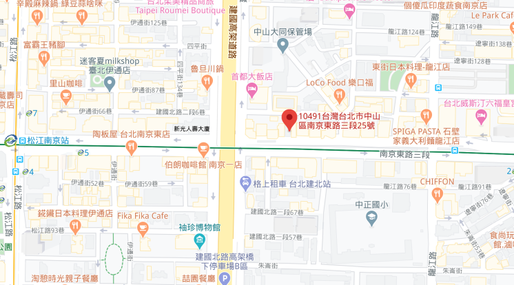

<section class="store store-info container">
    <h2>門市據點</h2>
    <div class="zone">
        <label for="zone">選擇地區</label>
        <select class="select-zone" name="zone" id="zone">
            <option value="Taipei">台北市</option>
            <option value="New-taipei">新北市</option>
            <option value="Taichung">台中市</option>
            <option value="Kaohsiung">高雄市</option>
        </select>
    </div>
    <div class="store-info-list">
        <div class="store_list_item">
            
            <ul class="info">
                <h4>台北中山旗艦店</h4>
                <li>
                    <span class="material-icons">
                        phone
                    </span>
                    <p>電話：(02)000-1234</p>
                </li>
                <li>
                    <span class="material-icons">
                        schedule
                    </span>
                    <p>營業時間：10:00-21:00</p>
                </li>
                <li><span class="material-icons">
                        room
                    </span>
                    <p>地址：台北市中山區南京東路25巷2-1號</p>
                </li>
        </div>
        <div class="map">
            
        </div>
</section>